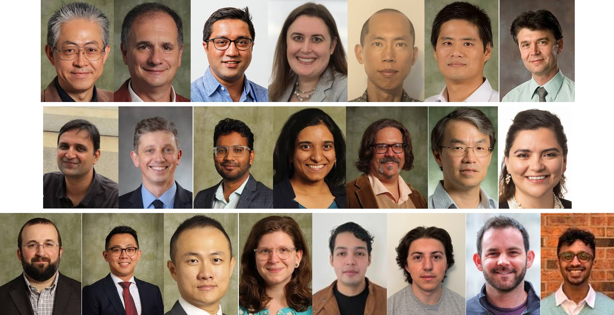
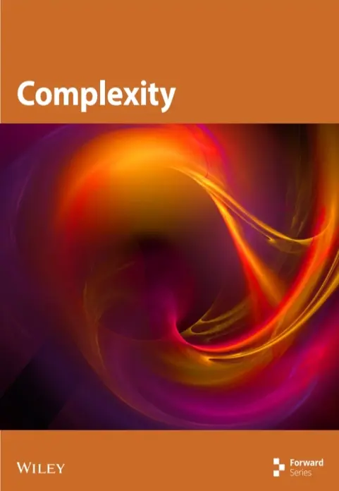
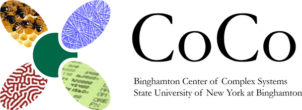
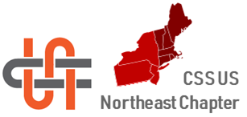

CCS 2026:
The 2026 Conference on Complex Systems
OCTOBER 9 - 16, 2026 BINGHAMTON, NY, USA & ONLINE
Sponsored by Thomas J. Watson College of Engineering and Applied Science, School of Systems Science and Industrial Engineering, Bernard M. and Ruth R. Bass Center for Leadership Studies, Entropy by MDPI, Binghamton University Graduate School, PLOS Complex Systems, Binghamton University Institute for AI and Society, Frontiers in Complex Systems, University of Michigan Center for the Study of Complex Systems, Complexity by Wiley, Binghamton Center of Complex Systems (CoCo), Complex Systems Society, and Complex Systems Society US Northeast Chapter
The 2026 Conference on Complex Systems will be held in Binghamton, New York, USA. Binghamton has a long history of creativity and innovation. The Greater Binghamton area has historically been called "the Valley of Opportunity" and attracted many immigrants (especially from Europe) since the mid-1800s, which has made the region's rich and diverse culture and demographics. It is the birthplace of IBM (International Business Machines), Link Flight Simulator, McIntosh Laboratory, and a number of other pioneering ventures, fostering a spirit of ingenuity that continues to thrive.
Located at the confluence of the Susquehanna river (one of the oldest rivers in the world) and the Chenango river, the region boasts stunning natural beauty and offers ample opportunities for outdoor recreation, from hiking and biking to fishing and kayaking. In particular, in mid-October when CCS 2026 is held, the Binghamton area will showcase its renowned and breathtaking fall foliage. Furthermore, a vibrant arts and culture scene flourishes here, with numerous galleries, theaters, and music venues providing enriching experiences.
CCS 2026 will be held primarily in person on the main campus at Binghamton University, with an online participation option via Zoom.
We call for submissions of abstracts for oral and poster presentations on a wide variety of complex systems research. Relevant topics include (but are not limited to):
Theoretical foundations of complex systems
Nonlinear dynamics and chaos
Systems theory, information theory, and systems science
Game theory, decision theory, and socio-economical applications
Self-organization, pattern formation, and collective behavior
Structure and dynamics of complex networks
Sustainability and adaptability of complex systems
Bio-inspired systems, machine learning, and evolutionary computation
Data-driven approaches to complex systems
Applications to the humanities, art, and literature
Historical and philosophical aspects of complex systems
Complex systems and education
Submissions should be made via the EasyChair submission system as a single PDF file in extended abstract format (1 page, including one mandatory figure).
Important Dates:
| Abstract submission open: | |
| Registration open: | |
| Abstract submission deadline: | |
| Abstract notification to authors: | |
| Early-bird registration deadline: | August 20, 2026 |
| Presenter registration final deadline: | September 20, 2026 |
| yrCSS Warm-up events: | October 9-10, 2026 |
| Main conference: | October 12-16, 2026 |
Best Presentation/Poster Awards:
The best presentation/poster awards are sponsored by the sponsor Entropy. This open access journal maintains rigorous standards and a medium publication time of 46 days from submission to publication online. It is fully covered by the leading indexing and abstracting services, including SCIE (Web of Science), Scopus, Google Scholar and PubMed/PMC.
We invite proposals of satellite sessions that will be held on Wednesday and Thursday at CCS 2026. Satellites can be a full-day or half-day session on a specific topic relevant to complex systems. Successful satellite session proposers will be expected to independently organize and manage their session through their own committees. Satellite organizers will be responsible for soliciting and reviewing contributions, coordinating with presenters, and maintaining the satellite’s webpage. Coffee breaks and lunch will be provided by the CCS 2026 main conference organizers.
Organizers of an accepted satellite will be given a satellite-only registration fee waiver for one person, which can be used to cover the registration of an invited speaker, an organizer, or any other designated participant. All the satellites will be promoted on the CCS 2026 website and social media, and all the satellite’s invited speakers will also be featured there as well.
| Proposal submission deadline: | |
| Notification of acceptance/rejection: | |
| Satellite dates: | October 14 & 15, 2026 |
If you have any difficulties with the above form, contact CCS26.Satellites@gmail.com for instructions of how to submit a proposal by email. The subject of your email should be: CCS26 Satellite Meeting Application "title_of_the_satellite".
If you have any question, please contact us at CCS26.Satellites@gmail.com with the subject line: Satellite query.
Main Conference:
Lecture Halls and University Union
4400 Vestal Parkway East, Vestal, NY 13850
Warm-Up Events by yrCSS:
Engineering Science Building ES 2008 & Center of Excellence CE 2011
Innovative Technologies Complex
85 Murray Hill Road, Vestal, NY 13850
Binghamton University, State University of New York
Parking is available on the venue (Lot J during the yrCSS warmup, and Lot M1 during the main conference) for registered participants, free of charge during the conference.
Registration Fees:
A full conference registration includes a dinner ticket. All registrations include one-year Complex Systems Society membership fee.
| Registration category | Early-bird | Regular |
| (until August 20, 2026) | (after August 21, 2026) | |
| Student - full conference: | $300 | $400 |
| Postdoc - full conference: | $400 | $500 |
| Academic - full conference: | $500 | $600 |
| Non-Academic - full conference: | $600 | $700 |
| Student - satellite only: | $150 | $200 |
| Postdoc - satellite only: | $200 | $250 |
| Academic - satellite only: | $250 | $300 |
| Non-Academic - satellite only: | $300 | $350 |
| Online only: | $150 | $250 |
| Extra dinner ticket: | $60 | $60 |
|
The organising committee is pleased to announce a limited number of travel grants to attend the conference. The goal is to support people from low- and middle-income countries who require financial support for travel and conference costs to attend. Conference grants are limited to a certain amount and may be used for participation fees, economy flights, accommodation, visa costs, and/or health insurance. Applicants agree that their submission details will be stored and kept for future Open Arms grant applications. Grants will be awarded only to people who present their research at the conference. Applicants must reside in one of the low or lower-middle, and upper-middle-income economies (defined by the World Bank). |
| How to apply |
|
Applicants must submit a motivation letter (250-word limit) disclosing their affiliation(s), career stage, CV, publications (if any), and the title and submission number. Submit your application here. |
| Deadline |
|
June 30, 2026 |
| Selection process |
|
Applicants will be notified of the decision via email by June 28, 2026. The number of grants will depend on the number of applicants. Applicants who are awarded a grant are required to attend the conference in person. |
| Email for contacts |
Organizing Committee:

| General Chairs: |
Hiroki Sayama (Binghamton University, SUNY) Luis Rocha (Binghamton University, SUNY) |
| Program Chairs: |
Gourab Ghoshal (University of Rochester) Sarah Muldoon (University at Buffalo, SUNY) Naoki Masuda (University of Michigan) Changqing Cheng (Binghamton University, SUNY) |
| Satellite Session Chairs: |
Georgi Georgiev (Assumption University / Worcester Polytechnic Institute) Ashwin Vaidya (Montclair State University) Oleg Pavlov (Worcester Polytechnic Institute) |
| Poster Session Chairs: |
Sriniwas Pandey (Binghamton University, SUNY) Narmada Sambaturu (Binghamton University, SUNY) |
| Logistics Chairs: |
Andreas Pape (Binghamton University, SUNY) Kenneth Chiu (Binghamton University, SUNY) Melissa Zeynep Ertem (Binghamton University, SUNY) |
| Activity Chairs: |
Rory Eckardt (Binghamton University, SUNY) Chou-Yu (Joey) Tsai (Binghamton University, SUNY) Congyu (Peter) Wu (Binghamton University, SUNY) |
| Accessibility Chair: | Stephanie Tulk Jesso (Binghamton University, SUNY) |
| Social Media Chair: | Amahury Jafet López Díaz (Binghamton University, SUNY) |
| Web Chair: | Robert Palermo (Binghamton University, SUNY) |
| Warm-Up Liaison: | Brennan Klein (Northeastern University) |
| Student Volunteer Lead: | Akshay Gangadhar (Binghamton University, SUNY) |
| CCS Steering Committee: |
Alberto Antonioni (President) Maia Angelova Federico Botta Iulia Martina Bulai Giulio Cimini Riccardo Di Clemente Tiziana Di Matteo Ricardo Gallotti Carlos Gershenson Laura Hernandez Iacopo Iacopini Ruiqi Li Mattia Mazzoli Ana Teixeira de Melo Ronaldo Menezes Chiara Mocenni Marcelo Moret Hiroki Sayama |
Platinum Sponsors:
Gold Sponsors:
Silver Sponsors:
Bronze Sponsors:
Other Sponsors:
  
Contact: